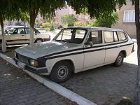

OTOMOBİLİM.COM
ANADOL
Türkiye'de tasarlanan ve üretilen ilk otomobilin Anadol olduğu düşünülür. Ancak Anadol'un tasarımı İngiliz Reliant firmasınca yapılmış (Reliant FW5) ve Otosan'da bu firmadan alınan lisansla üretim yapılmıştır. Anadol'un şasi, motor ve şanzımanları ise Ford'dan temin edilmiştir.
Anlaşma Girişimleri
Vehbi Koç tarafından 1928 yılında kurulan Otokoç, 1946 yılında Ford Motor Company'nin temsilcisi oldu, 1954'ten sonra da Türkiye'de bir otomobil üretmek için Ford temsilcileri ile görüşmeye başladı. 1956 yılında Vehbi Koç, dönemin başbakanı Adnan Menderes'ten bir mektup alarak Bernar Nahum ve Kenan İnal ile Henry Ford II'ye gitti. Bu temaslar işe yaradı ve işbirliği yapılmasına karar verildi. 1959 yılında Koç grubu Otosan'ı kurdu. Ford kamyonların montajı Otosan'da başladı.
Fiberglas Fikri Ve Otomobil Üretimi
1963 yılında Bernar Nahum ve Rahmi Koç İzmir Fuarı'nda iken İsrail yapımı bir fiberglas araç dikkatlerini çekti. Saç kalıp üretimine göre çok ucuz olan bu yöntem yerli otomobil üretimine başlama konusunda Vehbi Koç'u cesaretlendirdi. Koç Holding ve Ford ortaklığıyla üretilen Anadol'un tasarımı İngiliz Reliant firmasına ait olup araçta Ford firmasından tedarik edilen şase ve motorlar kullanıldı. Anadol'un üretimi 19 Aralık 1966'da başladı, ilk kez 1 Ocak 1967'de teşhir edildi ve 28 Şubat 1967'de satışına başlandı.
Anadol İsmi Ve Üretim
Anadol adı Anadolu kelimesinden gelmekte olup açılan isim yarışması sonucunda finale kalan, Anadolu, Anadol ve Koç arasından seçilmiş ve Otosan Otomobil Sanayi A.Ş. tarafından İstanbul'daki fabrikada üretilmeye başlamıştır. Anadol'un amblemi Hititlilerin geyik heykellerinden birini sembolize etmektedir. 1966’dan 1984'e kadar devam eden Anadol üretimi, 1984'te durdurulmuş bunun yerine Ford Motor Company lisansı altında dünyada üretimden kalkmış olan Ford Taunus'un üretimine başlanmış, ancak Otosan 500 ve 600D pikap üretimi 1991 yılına kadar devam etmiştir. Bugün, Otosan Ford Motor Company lisansı altında Ford hafif ticari araçlarının üretimine Gölcük’teki yeni tesislerinde devam etmekte ve başta Avrupa Birliği olmak üzere pek çok ülkeye Ford Motor Company lisanslı otomobil ihracatı yapmaktadır.
Aracın Özellikleri Ve Satışı
Anadol'un üretimi 19 Aralık 1966'da başlamış olsa da satış ve trafik tescili için gerekli olan "Yeterlilik Belgesi" ve "Araçların imal, tadil ve montajı hakkında teknik şartları gösteren Yönetmelik" onayı Makina Mühendisleri Odası'ndan 28 Şubat 1967 tarihinde alınmış ve dolayısı ile Anadol satışları bu tarihten sonra başlamıştır.Anadol'un ilk modelleri İngiliz Reliant ve Ogle Design tarafından tasarlanmıştır. Bütün modellerinde kaportası cam elyafı ve polyesterden yapılan Anadol'da motor olarak da Ford motorları kullanılmıştır. İlk kullanılan motor, Ford'un Cortina modelinin 1200 cc'lik Kent motorudur.1966 Aralık ayında satışa sunulan Anadol 1984 yılında üretimi durdurulana kadar 87 bin adet satılmıştır.Az sayıda kalan örnekleri, günümüzde klasik kabul edilmekte, meraklıları tarafından korunmakta ve kullanılmaktadır. Ayrıca ortadan kesilerek kamyonet yapılmış biçimleri ile adını aldığı Anadolu'nun küçük şehirlerinde halen kullanılmaktadır. Ayrıca İngilizler Anadol’un aynısını Yeni Zelanda’da üretmek için çaba göstermiş olup, günümüzde Yeni Zelanda’ya ait bir adada kullanılan Anadol'a rastlanmaktadır.
Olumsuz Yaklaşımlar
Gövdenin fiberglas olması, öküz, keçi ve eşekler tarafından yenildiği yönünde söylemlere neden olarak kaportası için olumsuz dedikodular yayılırken, dünyada bu teknoloji kullanılıyordu.
Anadol / A1 (1966-1975)
Anadol A1, Otosan Otomobil Sanayi A.Ş.’nin siparişi üzerine "FW5" kodu ile İngiliz Reliant Firması tarafından geliştirilmiş ve üretimine 19 Aralık 1966’da başlanmıştır. A1’in dizaynı ise İngiliz Ogle Design firmasından Tom Karen tarafından çizilmiştir. A1 üretiminde ilk olarak Ford Cortina'nın 1200 cc'lik 1959 model Kent motoru kullanılmış, 1968’de bu motor daha güçlü 1300 cc Ford Crossflow motor ile değiştirilmiştir. 1969’da gösterge panosu yenilenmiş, direksiyon daha ergonomik bir hale getirilmiştir. 1971’de o günün modası olarak kabin tavanı vinil ile kaplanmıştır. Bu dizayn MkI tipi olarak Nisan 1972’ye kadar bu şekilde kalmıştır. 1971’de İzmir’de düzenlenen Akdeniz Oyunları için geliştirilen A1 modeline “Anadol Akdeniz” adı verilmiş ve bu modelin üretimine 1972’de başlanmıştır. MkII olarak adlandırılan bu modelde farların yuvarlak şekli yerini dörtgen farlara bırakmış, vites bloğu ve tamponlar yenilenmiştir. Yeni dizaynda tamponlar gövdenin bir uzantısı haline gelmiş, ön ızgara değişmiş, farlar ve sinyaller dörtgen hale getirilmiş, sinyal ve stop lambaları üçgen bir şekil almıştır. Kabin içi de ciddi bir değişikliğe uğramış, gösterge tablosu ve ön konsol, koltuklar değişmiş, kullanılan malzemelerin kalitesi yükseltilmiştir. 1972’den itibaren Anadol’un Coupé’sinde kullanılan bu standart, A1 üretiminin sonuna kadar (1975) aynı kalmıştır.
Cam elyafı ve polyesterden imal edilen bu 5 kişilik araç gövdesi, H-tipi tam çelik şasi üzerine oturtulmuştur. Coupé olarak başlayan Anadol üretimi 1973 sonlarından itibaren sedan ve estate versiyonlarının da ilavesi ile devam etmiştir. Şasi, helezonlu bağımsız ön süspansiyon ve makaslı arka aksın üzerine kurulmuştur. Frenler ise önler disk, arkalar tamburdur. Direksiyon sisteminde ilk modellerde “recirculating ball” (döner bilyalı direksiyon kutusu) sistemi kullanılmış, daha sonra (1970) kremayerli (rack-and-pinion) sisteme geçilmiştir.
Anadol A1 üretimine 1975 yılında son verilmiş ve toplam 19.724 adet üretilmiştir.
Anadol A1 aynı zamanda Türkiye’nin ilk ralli arabası, Anadol Ralli Takımı (ART) da ilk ralli takımı olarak tarihe geçmiştir. Türkiye’nin ilk resmi rallisi olan 1968 Trakya Rallisi’ni kazanan A1 takımı ve ünlü pilotlar Renç Koçibey ve Demir Bükey’dir. İskender Atakan, Claude Nahum, Mete Oktar, Şükrü Okçu ve Serdar Bostancı’yı da diğer ünlü A1 pilotları olarak sayabiliriz. Bir başka A1 fanatiği de ünlü ralli pilotu Romolo Marcopoli’dir. 1968’de bir başka ünlü Türk pilot İskender Aruoba 30.000 km'lik ve 8 ay süren Avrupa-Afrika-Asya Rallisine Anadol A1’i ile katılmış ve başarı ile tamamlamıştır.
Anadol / A2 / SL (1970-1981)
Anadol A2 serisi, Türkiye’nin ilk 4 kapılı otomobili olmakla beraber, dünyada tamamı fiberglas gövdeye sahip ilk 4-kapılı sedan otomobili olarak tarihe geçmiştir. Prototipi 1969 yılında geliştirilen A2, 1970'te üretilerek piyasaya sürülmüştür.
A2 serisinde Ford Cortina'nın 1300cc'lik Kent motoru kullanılmıştır. Tek parça ön koltuğu ile tanınan bu ilk A2 modelleri teknik olarak A1 modelleri ile aynı donanıma sahiptiler. Az sayıda üretilen MkI tipi, 1972’den itibaren gövde yapısı A1 ile aynı hale getirilen ve MkII olarak üretilen A2 (burun, ızgara, far ve sinyaller) 1975 yılı sonuna kadar aynı şeklini korudu. 1976’dan itibaren SL modeli yeni A2 versiyonu olarak piyasaya sürüldü. SL’deki en önemli değişiklikler ön farlar ve arka stoplarda idi. Dörtgen arka stoplar ile yeni bir görünüm kazanan A2’nin kabin içi de yeni gösterge panosu, ön konsol ve kabin içi kullanılan malzemeler de tamamen yenilendi. Ayrıca A2, aracın güvenliğinin artırılması amacıyla çarpışma testine (crash test) tabi tutulan ilk Türk otomobilidir. A2 aile arabası olarak dizayn edilmiş olsa da, ticari olarak da büyük bir sükse yaptı ve 35.668 adetlik bir satış performansına ulaşarak en fazla satılan Anadol modeli oldu (A2 olarak 1970-1975 arası 20.267 adet, A2 SL olarak 1976-1981 arası 15.401 adet). A2 üretimi 1981’de sona erdi ve yerine A8-16 modeli üretilmeye başlandı.

Anadol / A4 / STC-16 (1973-1975)
İlk prototipi 1972’de geliştirilen STC-16, sadece 1973 ve 1975 yılları arasında üretildi. STC-16 Eralp Noyan tarafından dizayn edildi. Böylece 1961’de dizayn edilen Devrim (otomobil)’den sonra, Türkiye’de dizayn edilerek üretilen ve seri üretimi gerçekleşen ilk otomobil unvanını aldı.1971’de Otosan’ın Genel Müdürü olan ve Vehbi Koç’un damadı Erdoğan Gönül, Otosan yönetimini ikna ederek, seri üretime geçilmesi onayını aldı. STC-16 üst gelir seviyesindeki kullanıcıları ve uluslararası rallilerde Anadol markasına prestij sağlamayı hedeflemişti. Belçika’daki Kraliyet Sanat Akademisi (Royal Fine Arts Academy) mezunu olan Eralp Noyan’ın başında olduğu bir ekip tarafından çizilen STC-16, o yıllar gözde spor araba modelleri olan Datsun 240Z, Saab Sonett, Aston Martin, Ginetta & Marcos modellerinden esintiler taşımaktadır. Eralp Noyan, aracın iç ve dış dizayn karakteristiğini II. Dünya Savaşı’nın gelişmiş uçağı olan “Supermarine Spitfire”dan esinlenerek çizdiği ifade edilmektedir STC-16 üretim bandına A4 kodu ile konmuş, kısaltılmış ve modifiye edilmiş Anadol şasi ve süspansiyon sistemi ile 1600cc'lik Ford Mexico motoru kullanılmıştır. Şanzıman olarak ise yüksek performanslı İngiliz Ford Cortina ve Capri modellerinin şanzımanları kullanıldı. STC-16’nın ön konsol ve gösterge tabloları, o yılların gözde İtalyan ve İngiliz spor arabalarından hiçbir farkı yoktu. Kilometre ve devir saati dışında, o dönemin yeni detaylarından, sıfırlanabilen mesafe göstergesi, Lucas ampermetre, Smiths yağ, benzin ve hararet göstergeleri konulmuştu. 11 ay süren proje geliştirme safhası sonunda, test sürüşleri için ilk olarak 3 adet STC-16 prototipi hazırlandı. Test alanları olarak Cengiz Topel havaalanı ile E-5 karayolunun İstanbul-Adapazarı bölümü seçildi. STC-16’nın ilk çarpışma testleri de bu dönemde yapıldı.Daha sonra STC-16, test sürüşleri için Otosan Üretim Müdürü Nihat Atasagun tarafından İngiltere’ye M.I.R.A pistine götürüldü. STC-16 İngiltere’deki deneme sürüşlerinde ve görüldüğü otoban ve caddelerde, bir İngiliz markasının yeni spor modeli sanılarak büyük ilgiyle karşılandı ve dikkat çekti. Taşıdığı “320-E” test plakası nedeniyle birçok yerde durdurularak bu yeni model hakkında bilgi istendi. Bu testler sırasında pek çok İngiliz pilot tarafından denendi, performans, sürüş ve sürüş emniyeti açısından öneriler alındı ve bu öneriler doğrultusunda değişiklikler yapıldı. Ve, sonunda Nisan 1973’te ilk Türk yapımı spor otomotivi STC-16 üretim bandından inerek show-room’lardaki yerini aldı. STC-16 isminin “Sport Turkish Car 1600”ün kısaltması olduğu gibi, bu açılımın aynı zamanda “Sport Touring Coupé 1600” anlamında olduğu da ifade edilmektedir. Gençler ise bu açılımı “Süper Türk Canavarı 1600” olarak benimsemişlerdir.Geriye kalan araç sayısı bilinmemekle beraber yaklaşık 70 kadar STC-16'nın yollarda olduğu tahmin edilmektedir.Ne yazık ki, STC-16 üretimi 1973’teki global petrol krizinin yol açtığı ekonomik kriz nedeniyle uzun sürmedi. Benzin fiyatlarındaki aşırı artış ve bir petrol türevi olan fibre-glass maliyetlerindeki artışlar STC-16’nın üretim maliyetlerinin aşırı yükselmesine neden olduğu gibi, bu maliyetlerde yapılacak üretim sonrası satışların sadece yüksek gelir grubuna hitab etmesi ve aracın benzin tüketiminin yüksek olması bu arkadan itişli spor modelin üretim ömrünün çok kısa olmasına neden oldu. O yıllarda, diğer Anadol modellerinin 50.000-55.000 TL olmasına karşılık STC-16 fiyatları 70.000 TL’nin üzerinde idi. Bu nedenle STC-16 müşterileri sadece ralli pilotları, spor araba meraklıları olarak kaldı.Ancak, STC-16 o dönemin gençleri arasında haklı bir üne kavuştu. Geliştirilmiş ve modifiye edilmiş versiyonları Türkiye ve Dünya rallilerinde birçok yarışa girdi ve kazandı. Ralli için geliştirilen modellerde ağır şasi yerine daha hafif şasi ve 140 HP gücünde modifiye motorlar kullanılmıştır. En bilinen STC-16 pilotları olarak; Renç Koçibey, Demir Bükey, Romolo Marcopoli, İskender Aruoba,Cihat Gürkan, Ali Furgaç, Şevki Gökerman, Serdar Bostancı, Murat Okçuoğlu, Cüneyd Işıngör, Mehmet Becce, Hızır Gürel, Derya Karaköse ve Osman Arabacı’yı sayabiliriz.1973 ve 1975 arasında devam eden STC-16 üretimi sırasında toplam 176 araç üretilmiş olup, bunların büyük bölümü 1973’te üretilmiştir. Renk olarak genelde “Alanya Sarısı” olarak üretilen STC-16’lar bu renkle de özdeşleşmiştir. Az sayıda da olsa; dönemin spor arabalarında kullanılan beyaz şeritli kırmızı veya mavi şeritli beyaz renkli olanları da mevcuttur.


Anadol / A5 / SV-1600 (1973-1982)
SV-1600 üretim bandından 1973 yılının sonunda, A5 kodu ile dünyanın ilk fibre-glass gövdeli 5-kapılı station wagon (estate) arabası olarak indi.
4-kapılı Anadol modellerinden çok farklı bir dizayn ve görünüşe sahip olan SV-1600’ün esin kaynağı Reliant’ın “Scimicar Sports-station Coupé” modelidir. Motor olarak 5 ana yataklı 1600cc'lik Ford (I-4) Kent, 4 silindir OHV motorla donatılmıştır.
Aracın birçok detayı, üretildiği dönemin station wagonlarındaki Bertone ve Pininfarina dizayn özelliklerini taşımaktadır. SV-1600’ün özellikleri olarak, tek renk dış boya ve station otolarda bir yenilik olarak ön spoiler gösterilebilir.
Bir süre sonra, daha lüks versiyonları piyasaya çıkmış, bunlarda iki renkli dış boya ve yeni iç dizayn kullanılmıştır. 1976’dan itibaren SV-1600’lerde aluminyum alaşımlı jantlar, yeni tip direksiyon, yeni dizayn yan aynalar kullanılmış, dış boya ise yanlarda siyah-beyaz şeritli tek renk olarak üretimiştir. Araç içi dizaynında ise, bagaj hacmini genilşletmek amacıyla sökülür-takılır koltuk modeli uygulanmıştır.
SV-1600 üretimi 1982 yılında durdurulmuş olup toplam 6.499 adet üretilmiştir.


Anadol / A6 / Böcek (1975-1977)
Anadol Böcek, o yıllarda Otosan Araştırma ve Geliştirme Bölümünde çalışan Jan Nahum tarafından dizayn edilmiştir. Jan Nahum, daha sonraki yıllarda Otokar, Tofaş, FIAT/İtalya ve Petrol Ofisi gibi şirketlerde Genel Müdür ve CEO olarak da görev yaptı. Babası Bernar Nahum ise Koç’un ortağı olarak Otosan Firmasının kuruluşu, Anadol A1 modelinin geliştirilmesi ve üretiminde çok önemli rol oynamıştır. Bu aileden Claude Nahum da hem Anadol A1 ralli pilotu olarak, hem de Otosan Anadol Wankel motor projesi ve geliştirilmesinde önemli çalışmalar yapmıştır. Kendisi bugün, Karsan Otomotiv Sanayi’nin de sahibi olan Kıraça Şirketler Grubu’nun kurucu ortağıdır.
Anadol Böcek üretim bandından A6 kodu ile 1975’te indi. Böcek, aslında Türk Silahlı Kuvvetleri’nin isteği doğrultusunda geliştirildi. Volkswagen “Buggy” modeli ile benzerlikler taşımasına karşın, konsept ve karakteristik olarak değişik bir dizayn ile üretilmiştir. Otosan, o yıllarda artan turizm potansiyelini ve sayıları gittikçe çoğalan tatil köylerini de düşünerek, aracın halktan da göreceği talebi de dikkate almıştı. Üstü açık, kapısız, ön camı kaputla aynı eğimde olan dizayn, değişik gösterge paneli ve konsol aracın en önemli konsepti idi. Aynı eğimdeki kaput ve cam dizaynı, ileriki yıllarda ortaya çıkan SUV araçlara da esin kaynağı olmuş, döneminin ilerisinde kabul edilen panel ve konsol dizaynı, daha sonraki yıllarda pek çok Avrupalı üreticinin otomobil dizaynında esin kaynağı olmuştur.
Anadol Böcek 1298cc ve 63 HP Ford motor ile üretilmiş, hafif ve küçük kasası nedeniyle yüksek performans elde edilmiştir. Döneminin pop-art dizaynına paralel olarak asimetrik ön ve arka görünüşü, yine asimetrik ön panel, arkada sağda 2, solda 3 stop lambası, ön cam üzerindeki 5 açılı dikiz aynası 225/55/13 ebadında lastikleri, fiber üzerine vinil kaplı koltukları ile alışılmışın dışında bir görünüme sahipti.Anadol Böcek, kullanım ve isteklere göre değişik versiyonlara sahiptir: TRT dış çekimleri için martı kanat kapılı versiyonu, off-road versiyonu, itici/çekici versiyonu ve askeri versiyonu bulunmaktadır.
Anadol Böcek üretimi de, STC-16 gibi şanssız bir döneme rastgelmiştir. Döneminin çok ilerisinde dizayn edilen her iki model de petrol krizinden kaynaklanan Dünya’daki ve Türkiye’deki ekonomik sıkıntılar nedeniyle talep yaratamamış ve üretimleri askıya alınmıştır.1975 ve 1977 yılları arasında üretilen Böcek modeli sayısı sadece 203’tür.
Anadol / A8 / 16 ve Saloon 16 (1981-1984)
4-Kapılı A8-16 serisinin üretimi 1981’de başladı. A8-16 modelinin esin kaynağı o dönemin SAAB ve Volvo markalarının modelleri olmuştur. Bu modellere özgü geniş farlar, eğik burun, küt ve yüksek arka kesim gibi öncü detaylar A8- 16 dizaynında da kullanılmış, ancak, 1981 yılına göre biraz modası geçmiş olan ve Böcek’te kullanılan arka stoplar, aracın bu yenilikçi felsefesine uygun düşmemiştir. Aracın ön dizaynından dolayı A8-16 model halk arasında “Baltaburun” olarak da tanınmaktadır. Kabin içi dizayn da pek çok geleneksel Anadol müşterisine ters gelmiştir. 1973’te dizayn edilen SV-1600’ün kapı, cam ve çerçeveleri A8-16’da da kullanılmış, bu da potansiyel alıcılarda yeni çizgilerine rağmen bir toplama model hissi uyandırmıştır.
1981 ve 1982 yılı üretimlerinde yüksek performanslı 1.6 Pinto E-Max motor kullanılmış olsa da, bu araca bir albeni kazandırmaya yeterli gelmemiştir. Durum böyle olunca, üretim masraflarını azaltmak amacıyla 1983 ve 1984 üretimlerinde üretim bandına alınan Saloon 16 modelinde tekrar eski Ford (I-4) Kent, 4 silindir OHV, 5 ana yataklı 1600cc'lik motor kullanılmıştır.A8-16 modeli 1981-1984 yıllarında sadece 1.013 adet üretilmiştir.


Anadol Kamyonet / P2 / Otosan 500 ve Otosan 600D (1971-1991)
Anadol kamyonetle ilgili ilk çalışma 1970 yılında başladı. Aslında, ilk kamyonet üretme fikri, Otosan fabrikasında bir Anadol A1' in malzeme taşımak amacıyla tadil edilmesiyle ortaya çıktı. Bernar Nahum fabrikada kısımları dolaşırken bu aracı görerek, görüntüsünü pek beğenmemekle birlikte böyle bir aracın hafif ticari taşımacılıkta kullanılabileceği fikrini ortaya attı.
O tarihlerde, sanayileşmenin ve dışa açılmanın ilk yıllarında iç ticaretin de gelişmesi, özellikle küçük esnafın hafif yük taşınmasında “kamyonet” (pick-up)’lere olan ilgisini artırmaya başlamıştı. Bunun üzerine fiberglas atölyesinde çalışmalara başlandı ve önce bir miktar yekpare fiberglas gövdeli (kabin ve kasa) kamyonet yapıldı. Ancak bu aracın üretim ve kullanımının pratik olmaması nedeniyle saç kasalı fiber kupalı kamyonet üretimine geçildi. 1971 yılında seri üretimi başlayan Anadol kamyonetler P2 koduyla Otosan 500 olarak piyasaya çıkmış ve 1300cc benzinli motorla donatılmıştır. 1980’den itibaren 1300cc'lik benzinli motorla beraber 1200cc'lik Erk dizel motor da üretimde kullanılmaya başlanmıştır. Daha sonra ise Ford Taunus’larda da kullanılan 1600 cc'lik Ford OHC benzinli motor, çift boğazlı Weber karbüratörle birlikte kullanılmıştır. Ayrıca aracın iç mekanı tekrar dizayn edilmiş, dönemine göre oldukça modern bir konsola kavuşturulmuştur. Parçalar plastikten olmasına karşın, bir kamyonet için o yıllarda lüks bile sayılabilirdi. Ön panel göstergeleri Smith marka yerine Endiksan ile değiştirilmiş, göstergelerindeki rakamlar sarı'dan beyaza döndürülmüştür. Isıtma kontrol çubukları da yatay değil, dikey yerleştirilmiştir. Direksiyon simidi de yenilenmiş, direksiyonun ortasındaki geyik amblemi büyütülmüştür. Aynı amblem jantların ortasındaki plastik kapakçığın üzerinde de yer alır. 83 sonrası modeller P2 Otosan 600D olarak piyasaya çıkmış, 4 silindirli, düz, üstten kamlı 1900 cc ERK diesel motorla donatılmıştır. Ön kaput formunda da değişikliğe gidilmiş, kaput üzerindeki oluk çizgisi yerini şişkin bir forma bırakmıştır.
Anadol kamyonetler geçirdiği ufak tefek dizayn değişiklikleri ile 1971'den 1991 yılına kadar 36.892 adet üretilmiştir.
PTT gibi pek çok kamu kuruluşu yıllarca Anadol pick-up ile hizmet verdi. Ancak, Anadol kamyonet’e olan talep o kadar arttı ki, talebin karşılanmadığı noktada özellikle A2 modellerinin kesilerek kamyonete dönüştürülme dönemi başladı. Mevzuatın da ruhsat tadilatı ile destek olduğu bu dönemde, binlerce Anadol otomobil kamyonet’e dönüştürülerek trafiğe çıktı.
Bugün bile, Türkiye’nin hemen hemen her köşesinde Anadol kamyonetler hizmet vermeye devam etmektedir.